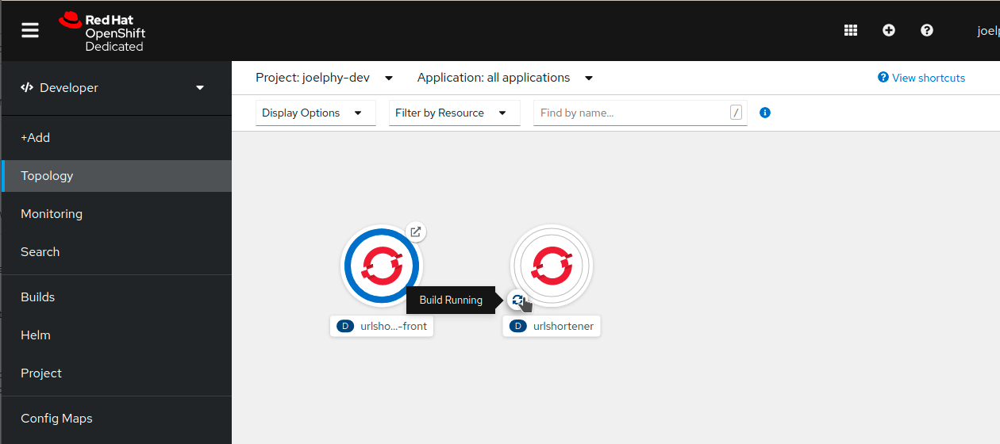
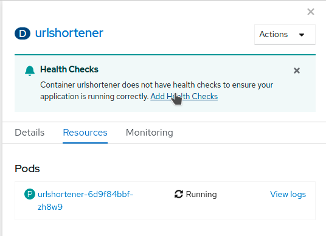

Deploy the Back-End
In the previous section, you created a Dockerfile, built a container and then pushed it to a shared registry so it could be used by OpenShift.
When deploying applications to OpenShift, you can use some of the built-in toolings to make it much easier to deploy an application. In this section, you will deploy a Node.js back-end using s2i.
Use s2i
Source-to-image (s2i) is a toolkit to build containers directly from the source code.
To build the Node.js back-end from the Github source code, you can use the oc new-app command you’ve used previously. This time, you must specify a base image from which to build the container (centos7/nodejs-14-centos) and indicate the Github repository in which the source code is located. The --context-dir parameter is there to specify that the source code is located in the /back folder.
oc new-app quay.io/centos7/nodejs-12-centos7~https://github.com/joellord/urlshortener --context-dir=backYou should get a message back indicating that a Build has started.
--> Found container image 4c29251 (4 days old) from quay.io for "quay.io/centos7/nodejs-12-centos7"
Node.js 12
----------
Node.js 12 available as container is a base platform for building and running various Node.js 12 applications and frameworks. Node.js is a platform built on Chrome's JavaScript runtime for easily building fast, scalable network applications. Node.js uses an event-driven, non-blocking I/O model that makes it lightweight and efficient, perfect for data-intensive real-time applications that run across distributed devices.
Tags: builder, nodejs, nodejs12
* An image stream tag will be created as "nodejs-12-centos7:latest" that will track the source image
* A source build using source code from https://github.com/joellord/urlshortener will be created
* The resulting image will be pushed to image stream tag "urlshortener:latest"
* Every time "nodejs-12-centos7:latest" changes a new build will be triggered
--> Creating resources ...
imagestream.image.openshift.io "nodejs-12-centos7" created
imagestream.image.openshift.io "urlshortener" created
buildconfig.build.openshift.io "urlshortener" created
deployment.apps "urlshortener" created
service "urlshortener" created
--> Success
Build scheduled, use 'oc logs -f bc/urlshortener' to track its progress.
Application is not exposed. You can expose services to the outside world by executing one or more of the commands below:
'oc expose svc/urlshortener'
Run 'oc status' to view your app.If you head to the topology view, you can see that the application is there with a white ring. This ring indicates that the application is currently being built. The source code is cloned, and the image is built directly on the OpenShift cluster.

In a few minutes, you should see the ring turn blue, indicating that the image was successfully deployed.
Configure environment variables
The Node.js application was running on port 3001 in the development environment, which was set as an environment variable. In the production server, you might want to change some of those environment variables. In this case, you will change the port on which the application is running to 8080.
Click on the urlshortener circle, and a side panel will open. In this panel, find the Actions menu in the top right and select Edit Deployment.

A YAML editor is then displayed where you can see the description of the urlshortener deployment.
In the navigation bar, select Environment. This will open up the Environment variables editor. Add a single value with the name PORT and the value 8080.

Then click save and go back to the topology view.
If you go back fast enough, you might see a double ring around the urlshortener application.

This is because OpenShift is currently deploying a new version of the application with the new environment variables. Once it’s up and running, it takes the old one down. This process ensures that there is zero downtime when you update your applications.
Expose the application
Now that the application was deployed, you can expose it using the same command as you used for the front-end.
oc expose svc/urlshortenerThere is no need to specify the port in this case because s2i assumed that the application would be running on port 8080.
If you click on the Open URL link, you should see a response back from the server.
{ "msg": "Hello" }You can also try the /health route, which should return the server and database status.
{ "server": true, "database": false }You can see the code for this /health route in the express server here.
Add a health check
OpenShift can periodically check your pod to see if it is still running. This is called a health check. In the side panel when you clicked on the urlshortener deployment, you might have noticed a message recommending to add one. Go ahead and click on Add Health Checks.

From this next screen, you can add a Liveness Probe that monitors your application by doing periodic calls to the specified route. As long as it returns a 200 HTTP code, OpenShift assumes that the application is still running.
To add the health check, click on Add Liveness Probe. Change the Path to /health and keep all the other default values.
Click on the checkmark at the bottom of the dashed area, and then click on the blue "Add" button to save this health check.
If you want to validate that this is working, you can use the Resources tab from the deployment side panel and click on View logs next to the pod name. This screen shows you the pod logs, and you should see the request to /health every 10 seconds.